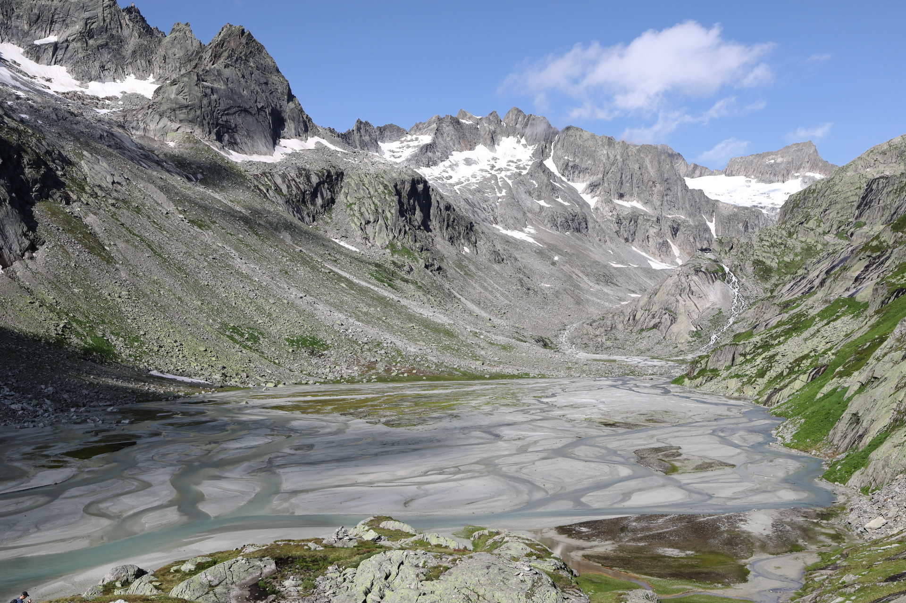
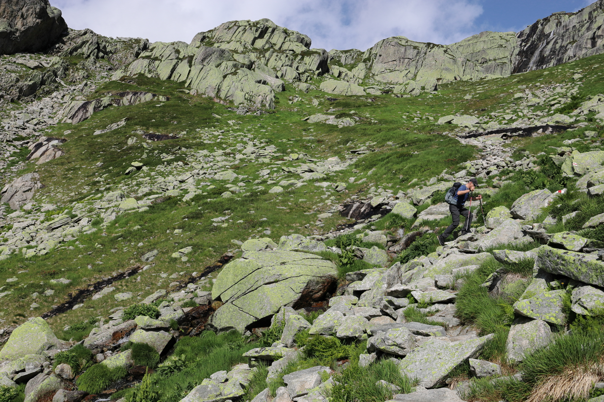
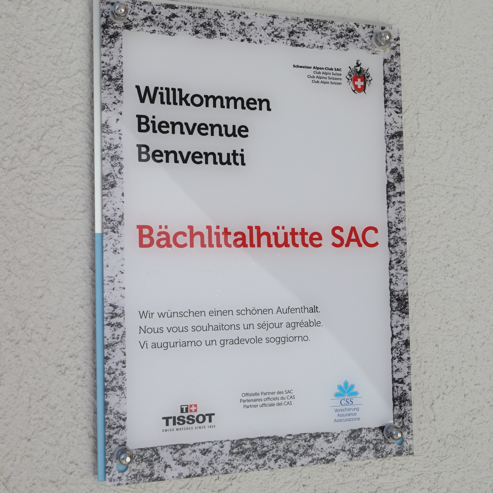
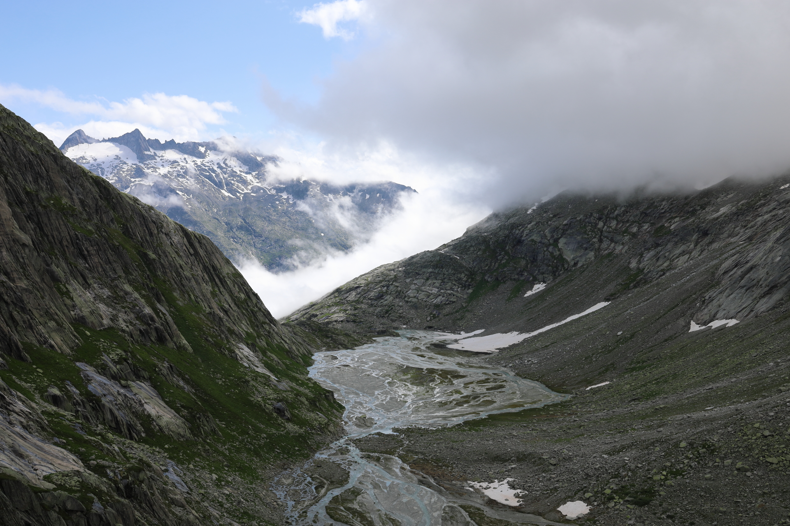
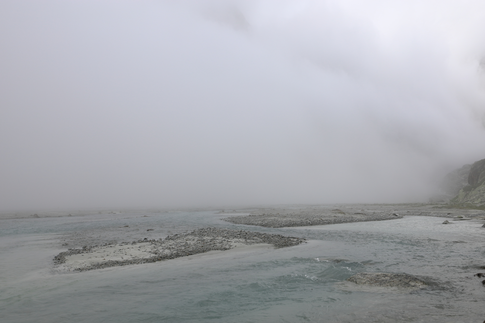

Bächlitalhütte SAC
August 8, 2021 by Pat and Bruno ‐ 4 min read
| Difficulty | T2 |
|---|---|
| ⇄ Distance | 9.8 km |
| ↑ Up | 610 m |
| ↓ Down | 610 m |
| Notable Locations | Räterichsboden, Bächlitalhütte SAC |
| Public Transit Access? | Yes |
The
Quick Summary
- Day hike from the
Räterichsbodensee (near theGrimsel Pass ) to theBächlitalhütte SAC - The starting point is easily accessible with both car and public transit
- The ascent and descent take the same path; there is only one officially marked path which leads to the
Bächlitalhütte - If we were to do this hike again, we’d go when the ground would be dry. While the hike itself isn’t very dangerous, most of the hike is on smooth rocks which can make the path quite slippery when wet.
Ascent to the Bächlital
 The dam at the end of the
The dam at the end of the
 A view back down to the
A view back down to the
 The clouds are a little unpredictable today. Regardless though, the intermittent periods of clear skies offer some great views down the valley.
The clouds are a little unpredictable today. Regardless though, the intermittent periods of clear skies offer some great views down the valley.
This gives a fairly good idea of what most of the path up to the Bächlisboden glacial runoff plain looks like. Most of the path is quite narrow and largely consists of these sorts of stone steps.
A final view of the valley which leads up to the
Along the Bächlital
 Turning 180° from where the previous picture was taken, we now have our first view into the
Turning 180° from where the previous picture was taken, we now have our first view into the
 Making our way up the first part of the
Making our way up the first part of the
 The path is very well marked and is generally unproblematic.
The path is very well marked and is generally unproblematic.

Our first view of the
Making our way along the right-hand side of the valley towards the
 Only one more short ascent to go until we've reached the hut.
Only one more short ascent to go until we've reached the hut.
 A quick look back down from where we've come from. The clouds are now slowly starting to creep into the
A quick look back down from where we've come from. The clouds are now slowly starting to creep into the
 This portion of the path is again very well marked. Similar to the first portion of the hike, the path consists mostly of stacked rocks (almost like stair steps) which makes the ascent pretty enjoyable.
Looks kind of mysterious with those clouds...

Venturing Beyond the Hut
After a relaxing coffee on the patio, we decided to make our way further up the
 A really beautiful path.
A really beautiful path.
 The
The
 You often find moss campion in these rocky terrains where you wouldn't imaging anything would be capable of growing. Nature is truly amazing.
You often find moss campion in these rocky terrains where you wouldn't imaging anything would be capable of growing. Nature is truly amazing.
 After not having any luck with the clearing cloud cover, we decided to make our way back to the hut and return back to the
After not having any luck with the clearing cloud cover, we decided to make our way back to the hut and return back to the
A Foggy Return

The view from the patio of the
And now back at the plain, back in rolls the fog. At least we were lucky enough to have an incredible view over the valley from our vantage point at the hut.
 This was the majority of the view for the way down. Not much to see, but still an enjoyable descent. As mentioned before though, watch out for moss covered rocks on the way down as some of them were quite slippery due to the fog (Bruno wiped out once on a large flat mossy rock on the descent).
Back at the